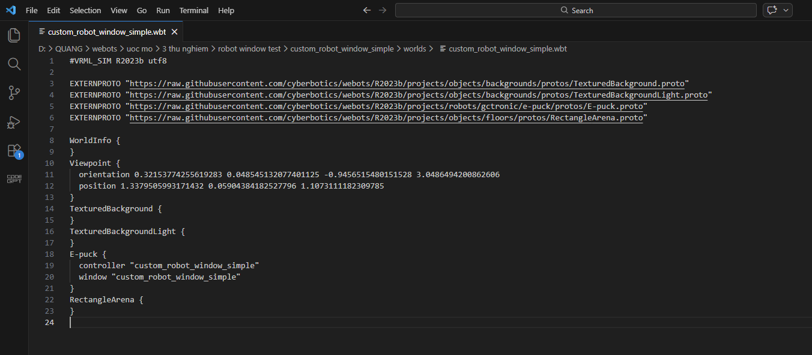
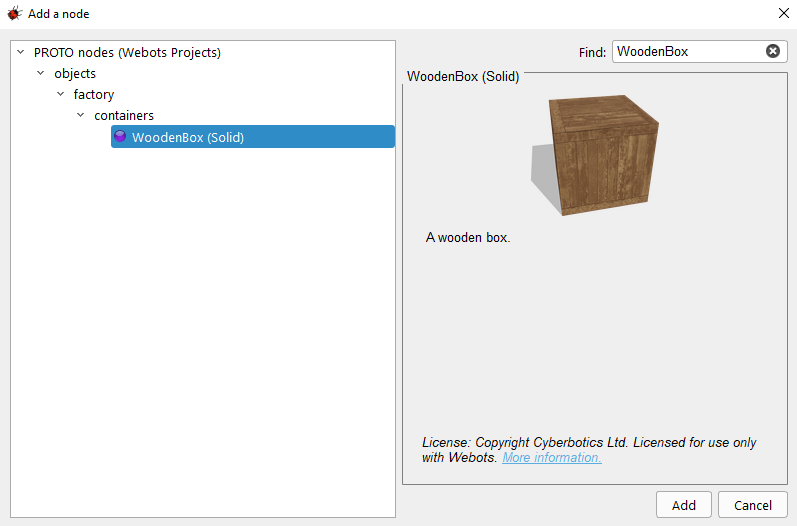
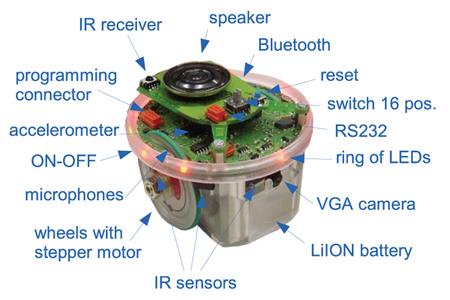

Bài Mô Phỏng Đầu Tiên Cùng Webots
🎯 Hoạt động lớp học
Đối tượng hướng tới: Học sinh có đam mê sau khóa học ROBO001 / sinh viên làm quen mô phỏng robot (nắm cơ bản về python/ c++). Yêu cầu các bạn tham khảo hướng dẫn cơ bản về cách sử dụng webots.
- Làm quen Giao diện webots + Thao tác với chuột
- Tạo thế giới mới cho riêng mình
- Thêm robot e-puck hay bất kỳ robot nào em thích
- Lập trình controller cơ bản
🌍 I. Tạo thế giới mới cho riêng mình
Khái niệm về world (thế giới mô phỏng)
World (Thế giới) là một tệp tin chứa toàn bộ thông tin như: vị trí các vật thể, hình dáng của chúng, cách chúng tương tác với nhau, màu sắc của bầu trời, cũng như các định nghĩa về trọng lực, ma sát, khối lượng của vật thể... Nó xác định trạng thái ban đầu của một phiên mô phỏng.
- Nodes (Nút): Các vật thể khác nhau trong thế giới được gọi là các Node.
- Scene Tree (Cây phối cảnh): Các Node được sắp xếp theo cấu trúc phân cấp. Một Node có thể chứa các Node con bên trong nó.
- Định dạng tệp: Thế giới được lưu trữ dưới dạng tệp
.wbt(kế thừa từ ngôn ngữ VRML97). File.wbthoàn toàn có thể mở và chỉnh sửa bằng code editor như VSCode, Notepad++, v.v.

Hình minh họa: File .wbt hoàn toàn có thể mở bằng Text Editor (VS Code)- Lưu trữ: Các tệp world phải được lưu trữ trực tiếp trong thư mục
worlds.
🛠️ Thực hành tạo và kiểm tra thế giới
- Bước 1: Mở webots trên màn hình. (Tham khảo slide Webot Installation & Simple Usage Guide (2025).pptx).
- Bước 2: Nháy chọn
Fileở góc trái -> NhấnNew-> ChọnNew Project Directory. - Bước 3: Nhấn Next, tạo 1 folder mới ở ổ D (hoặc ổ E) để chứa dự án mới.
- Bước 4: Đặt tên cho project. Tick hết vào các ô, đặc biệt là ô “Add a rectangle arena”. Nhấn Finish.
Kiểm tra và Điều chỉnh:
Trong Scene Tree View, nháy đúp vào Node RectangleArena. Mở trường floorTileSize và đặt thành 0.25 0.25 (ô gạch nhỏ lại). Chọn trường wallHeight thay đổi thành 0.05 (tường thấp xuống).
 Hình minh họa: Điều chỉnh kích thước sàn (floorTileSize)
Hình minh họa: Điều chỉnh kích thước sàn (floorTileSize)
📦 Thực Hành Thả Vật Thể
- Bước 1 - Thêm vật thể: Nhấp đúp
RectangleArena-> Nhấn nút Add (+) -> ChọnPROTO nodes / objects / factory / containers / WoodenBox(Solid). - Bước 2 - Chỉnh kích thước & vị trí: Mở trường dữ liệu của WoodenBox, thay đổi
sizethành0.1 0.1 0.1vàtranslationthành0 0 0.05. - Bước 3 - Di chuyển & Sao chép: Nhấn giữ
Shift + chuột tráiđể kéo thùng. DùngCtrl+C, Ctrl+Vđể sao chép. - Bước 4 - Xoay: Dùng các mũi tên màu xanh dương để xoay thùng hoặc dùng
Shift + chuột phải. - Bước 5: Nhấn nút Save để lưu lại thế giới.

Hình minh họa: Tìm và thêm Node WoodenBox Hình minh họa: Thả WoodenBox thành công vào không gian mô phỏng
Hình minh họa: Thả WoodenBox thành công vào không gian mô phỏng
🤖 II. Thêm Robot E-puck & Các Tác Dụng Vật Lý
E-puck là một robot nhỏ sở hữu hệ thống bánh xe vi sai, 10 đèn LED và 8 cảm biến khoảng cách cùng một Camera.
0:00:00:000 trước khi chỉnh sửa thế giới để tránh tích tụ sai số.
- Thêm robot: Chọn nút
WoodenBoxcuối cùng -> Add (+) ->PROTO nodes / robots / gctronic / e-puck / E-puck (Robot). Điều chỉnh vị trí và nhấn Run. Robot sẽ tự tránh chướng ngại vật nhờ bộ điều khiển mặc định.

Hình minh họa: Robot e-puck đã được đưa vào sân đấuNodes -> robots nhé!
- Thao tác Camera: Di chuyển cửa sổ camera màu đen, kéo góc để phóng to/thu nhỏ. Đóng bằng "x". Để hiện lại, vào menu
Overlays -> Hide All Camera Devices.
Tác Dụng Vật Lý & Bước Thời Gian (TimeStep)
Khi mô phỏng đang chạy, bạn có thể tác động vật lý (nếu vật có khối lượng):
- Windows/Linux: Nhấn giữ Alt + chuột trái + kéo chuột.
- Mac: Nhấn giữ Option (⌥) + chuột trái + kéo chuột.
Revert. Mở nút WorldInfo, tìm basicTimeStep và đặt giá trị là 16 (miligiây). Sau đó Save lại.
💻 III. Tạo Một Bộ Điều Khiển (Controller)
Controller là chương trình xác định hành vi của robot. Các ngôn ngữ như C, C++, Java cần được biên dịch (compile), trong khi Python, MATLAB là ngôn ngữ thông dịch.
- Một controller có thể dùng cho nhiều robot cùng lúc.
- Mỗi controller chạy trong một tiến trình (process) hoàn toàn độc lập với tệp
.wbt.
- Bước 1 - Tạo tệp: Vào
File / New / New Robot Controller…Chọn C, đặt tênepuck_go_forward. - Bước 2 - Mở Text Editor: Chỉnh sửa mã nguồn trực tiếp trên phần mềm Webots.
- Bước 3 - Liên kết Controller: Mở Node E-puck, tìm trường
controller, chọnSelect...và gắnepuck_go_forwardvào.
 Hình minh họa: Trình soạn thảo mã nguồn (Text Editor) mặc định của Webots
Hình minh họa: Trình soạn thảo mã nguồn (Text Editor) mặc định của Webots

Đoạn mã cho robot tiến thẳng:
#include <webots/robot.h>
#include <webots/motor.h>
#define TIME_STEP 64
int main(int argc, char **argv) {
wb_robot_init();
WbDeviceTag left_motor = wb_robot_get_device("left wheel motor");
WbDeviceTag right_motor = wb_robot_get_device("right wheel motor");
wb_motor_set_position(left_motor, 10.0);
wb_motor_set_position(right_motor, 10.0);
while (wb_robot_step(TIME_STEP) != -1) { }
wb_robot_cleanup();
return 0;
}Thực thi: Lưu mã nguồn -> Nhấn Build -> Reset và chạy mô phỏng. (Lưu ý thư mục controller sẽ chứa file nhị phân trùng tên thư mục gốc, ví dụ: epuck_go_forward.exe).
🚀 IV. Mở Rộng: Điều Khiển Tốc Độ
Bánh xe robot thường được điều khiển bằng vận tốc thay vì vị trí. Để làm việc này, đặt vị trí mục tiêu là INFINITY:
#include <webots/robot.h>
#include <webots/motor.h>
#define TIME_STEP 64
#define MAX_SPEED 6.28
int main(int argc, char **argv) {
wb_robot_init();
WbDeviceTag left_motor = wb_robot_get_device("left wheel motor");
WbDeviceTag right_motor = wb_robot_get_device("right wheel motor");
// Đặt vị trí là vô cực để bật chế độ speed control
wb_motor_set_position(left_motor, INFINITY);
wb_motor_set_position(right_motor, INFINITY);
wb_motor_set_velocity(left_motor, 0.1 * MAX_SPEED);
wb_motor_set_velocity(right_motor, 0.1 * MAX_SPEED);
while (wb_robot_step(TIME_STEP) != -1) { }
wb_robot_cleanup();
return 0;
}